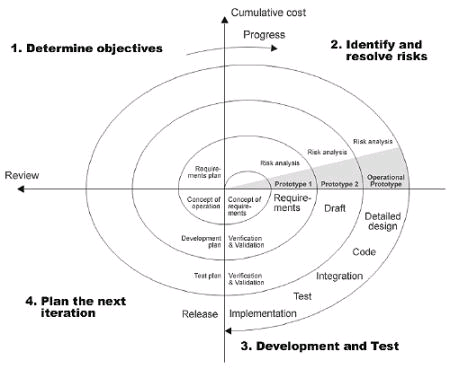

Mis on spiraalmudel?
Spiraalmudel on tarkvaraarenduse mudel, mis põhineb korduvatel tsüklitel (spiraalidel) ning keskendub eelkõige riskide analüüsile.
Iga tsükkel parandab ja täiustab süsteemi järk-järgult.
Spiraalmudeli etapid
- Eesmärkide seadmine – määratakse, mida selles tsüklis arendatakse
- Riskide analüüs – hinnatakse tehnilisi ja projektiriske
- Arendus ja testimine – luuakse ja kontrollitakse lahendust
- Planeerimine – valmistatakse ette järgmine iteratsioon
Etappide selgitus
Spiraalmudeli iga tsükkel on korduv protsess, kus süsteemi arendatakse samm-sammult.
Erinevalt lineaarsetest mudelitest (nt Waterfall) keskendub spiraalmudel riskide vähendamisele.
Arendusmudeli joonis
